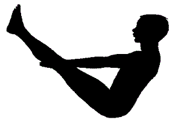

Boat Pose (Naukasana)
- Lie on your back with your feet together and arms beside your body.
- Take a deep breath in. As you exhale, lift your chest and feet off the ground, stretching your arms towards your feet.
- Your eyes, fingers and toes should be in a line.
- Keep breathing deeply and easily while maintaining the pose.
- Come back to the ground slowly and relax as you exhale.